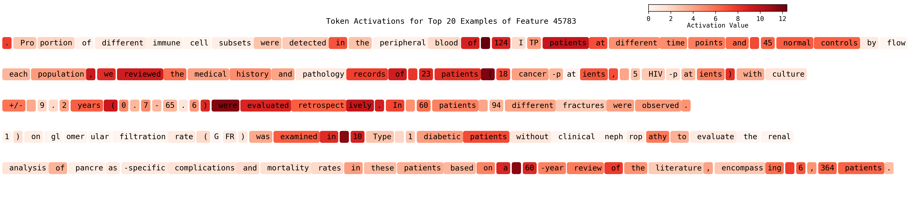

Scaling Monosemanticity on LLaMA

Training sparse autoencoders (SAEs) on LLaMA activations revealed several key insights about feature scaling and monosemanticity.
What worked: Larger SAEs with higher sparsity penalties produced more interpretable, monosemantic features. The dead feature rate decreased significantly with proper initialization and learning rate scheduling. Features that emerged were often tied to specific linguistic or semantic concepts rather than being polysemantic.
Challenges: Training stability was sensitive to hyperparameters, especially the sparsity coefficient. Some features remained polysemantic even with increased model capacity, suggesting inherent limitations in the activation space structure.
Takeaways: Scaling SAE size helps, but diminishing returns kick in. The relationship between model size and feature interpretability isn't linear—larger models don't automatically yield more monosemantic features without careful tuning.